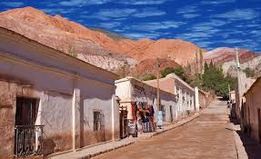
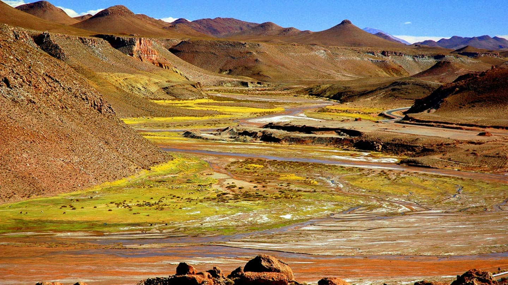
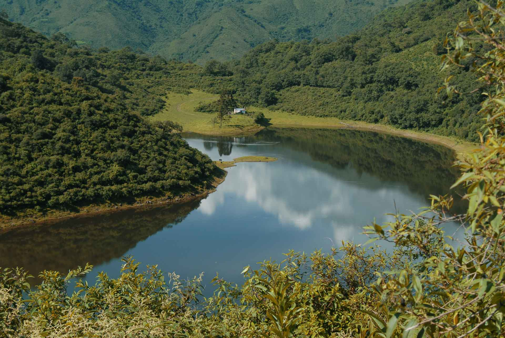
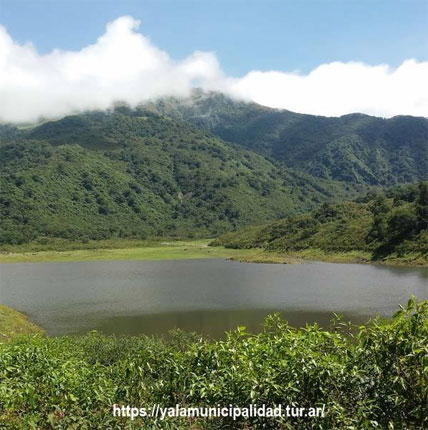

Humahuaca fue fundada por los españoles a fines del siglo XVI. En su Iglesia y en el Museo del Carnaval Norteño hay un complejo panorama de los usos y costumbres de la región. A 12 Km están las misteriosas ruinas de los andenes de cultivo de Coctaca con numerosas cuadrículas de pircas.
La Puna es una de las geografías que conforman el paisaje en la provincia de Jujuy. Sus salinas, estepas, planicies altiplánicas y lagunas rodeadas por montañas, son el escenario donde sus habitantes resguardan y custodian sus costumbres ancestrales.
La mayor atracción de esta región consiste en la belleza y diversidad de sus paisajes, desde la selva pedemontana, cerros tapizados de pastizales, arroyos de aguas cristalinas y como así también los ríos correntosos que aportan sus aguas a la región fértil del valle de Ledesma.
La zona de los valles ocupa la región centro-sur de la provincia, donde se desperdigan lugares de ensueño con paisajes espectaculares y un clima de temperatura media, que la convierten en una zona de estación primaveral durante casi todo el año.
